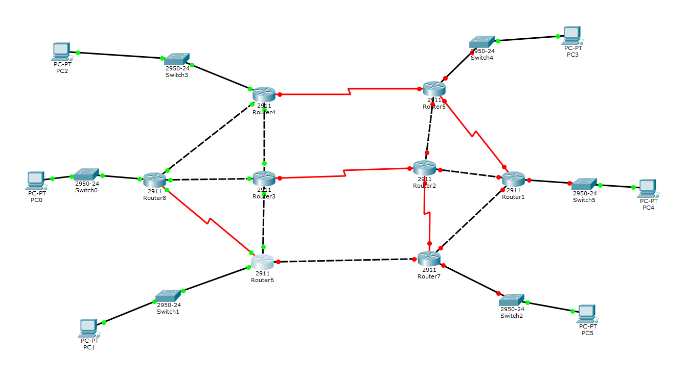
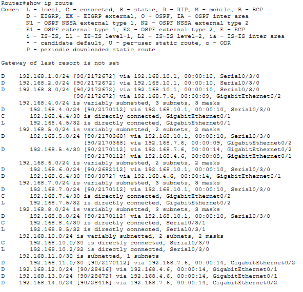

Routage Dynamique EIGRP.
Cisco IOS / Algorithme DUAL / Convergence Haute Vitesse1. Contexte du Projet
Dans une infrastructure d'entreprise, le routage statique devient vite ingérable dès que le réseau s'étend. Pour ce projet, j'ai déployé le protocole EIGRP (Enhanced Interior Gateway Routing Protocol) sur une topologie multi-routeurs Cisco.
L'objectif était de garantir une connectivité totale entre différents sous-réseaux tout en assurant une convergence ultra-rapide : si un lien tombe, le réseau doit recalculer un chemin de secours en quelques millisecondes sans interruption pour l'utilisateur final.
2. Travail Fourni
A. Préparation des Interfaces
Avant d'activer le routage, j'ai configuré l'adressage IP sur chaque interface des routeurs. J'ai veillé à respecter un plan d'adressage strict pour éviter les chevauchements et j'ai activé les interfaces via la commande no shutdown. Cette base physique est indispensable pour que les routeurs puissent s'échanger leurs paquets "Hello" de voisinage.

Schéma de la topologie Cisco déployée
B. Déploiement du Protocole
J'ai activé le processus EIGRP en utilisant un numéro de Système Autonome (AS) commun à tous les routeurs. Pour optimiser les échanges, j'ai utilisé des masques génériques (Wildcard masks) et j'ai désactivé le résumé automatique des routes pour conserver la précision des masques de sous-réseau.
Router(config)# router eigrp 100
Router(config-router)# network 192.168.10.0 0.0.0.255
Router(config-router)# network 10.1.1.0 0.0.0.3
Router(config-router)# no auto-summary
Router(config-router)# passive-interface GigabitEthernet0/0
C. Analyse de la Table de Routage
Une fois le protocole stabilisé, j'ai analysé la table de routage. J'ai vérifié la présence des routes marquées "D" (EIGRP) et j'ai identifié les Successors (meilleurs chemins) et les Feasible Successors (chemins de secours). Cette distinction est le secret de la rapidité d'EIGRP grâce à son algorithme DUAL.

Vérification du voisinage et des routes
3. Difficultés Rencontrées
J'ai dû résoudre des problèmes d'adjacence entre deux routeurs. Après investigation, j'ai découvert que les numéros d'AS (Autonomous System) ne correspondaient pas, empêchant la formation du voisinage. De plus, j'ai configuré des interfaces passives sur les segments LAN pour éviter d'envoyer des mises à jour de routage inutiles vers les postes utilisateurs, ce qui renforce la sécurité et économise de la bande passante.
4. Résultat Final
Le réseau est désormais totalement maillé et redondant. J'ai testé la tolérance aux pannes en coupant physiquement un lien principal : la bascule vers le chemin de secours s'est faite sans aucune perte de paquets (test via ping continu). Cette maîtrise du routage dynamique Cisco est une brique essentielle de mon expertise en tant qu'administrateur réseau.